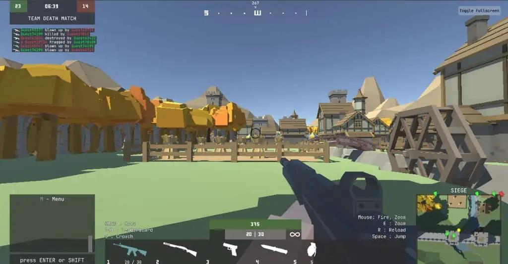
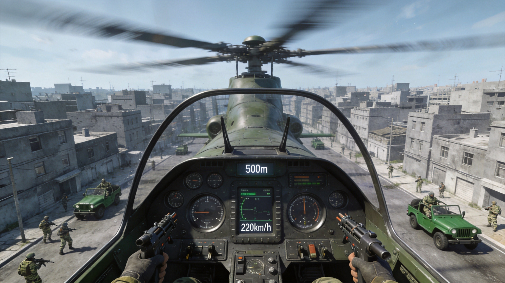
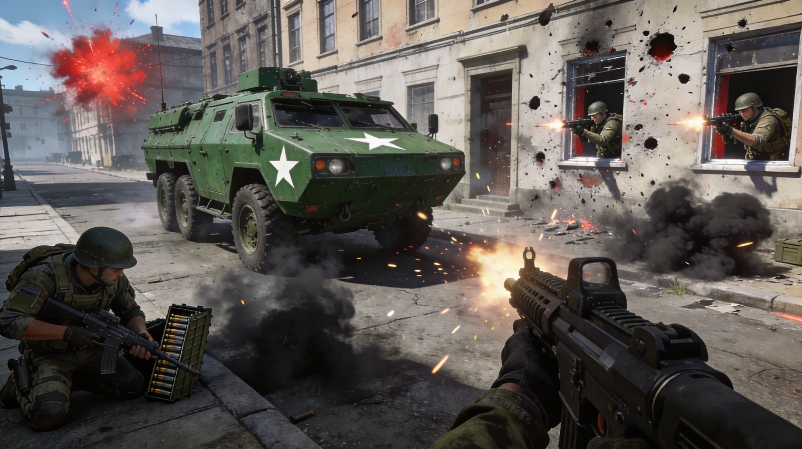

What Is War Brokers?
War Brokers is a free-to-play browser-based multiplayer FPS that combines infantry combat with vehicular warfare. Developed by Trebuchet Studio, it supports up to 15 players per match across expansive maps featuring cities, deserts, and military bases. Unlike typical .io shooters, War Brokers lets you pilot tanks, helicopters, APCs, and jets alongside on-foot combat — making it one of the most feature-rich browser FPS games available in 2026.
The game stands out because every player starts on equal footing. There are no pay-to-win mechanics, no stat advantages, and no locked content. Victory depends purely on your shooting skills, vehicle mastery, map knowledge, and team coordination.
Controls & Getting Started
War Brokers uses standard FPS controls that will feel familiar to anyone who has played browser shooters. The learning curve is gentle, but mastering the full control set — especially vehicle operation — takes practice.
Infantry Controls
| Key | Action |
|---|---|
| W/A/S/D | Move forward/left/backward/right |
| Spacebar | Jump (wall jumps possible) |
| Shift | Sprint |
| F | Interact / Pick up items / Raise missile |
| Left Mouse | Fire weapon |
| Right Mouse | Aim down sights (ADS) |
| 1-5 | Switch weapons |
| R | Reload |
| G | Throw grenade |
| M | Open main menu / settings |
Vehicle Controls
| Key | Action |
|---|---|
| W/S | Accelerate / Reverse |
| A/D | Turn left/right |
| Mouse | Aim vehicle weapon |
| Left Mouse | Fire vehicle weapon |
| Space | Brake (helicopters: descend) |
| E | Enter/Exit vehicle |
Always try to enter a vehicle early in the match. Vehicles provide massive firepower advantages and can turn the tide of battle. However, they also make you a priority target — expect enemy fire once you are spotted in a tank or helicopter.

Complete Weapons Guide
War Brokers features 17 balanced weapons spanning short-range, mid-range, and long-range combat. Each weapon has distinct handling characteristics, and choosing the right one for the situation is key to success.
Primary Weapons
| Weapon | Type | Range | Best For |
|---|---|---|---|
| Assault Rifle | Automatic | Mid | All-purpose combat, mid-range engagements |
| SMG | Automatic | Close | Rushing, building clearing, close-quarters |
| Shotgun | Shell | Close | Ambushes, room clearing, devastating at point-blank |
| Sniper Rifle | Bolt-action | Long | Long-range eliminations, overwatch positions |
| LMG | Automatic | Mid-Long | Suppressive fire, holding positions |
| Battle Rifle | Semi-auto | Mid-Long | Precise burst damage, medium engagements |
| DMR | Semi-auto | Long | Fast follow-up shots at distance |
Special Weapons & Pickups
| Weapon | Type | Notes |
|---|---|---|
| Rocket Launcher | Explosive | Area damage, effective against vehicles |
| Grenade Launcher | Explosive | Bouncing projectiles, area denial |
| Hand Grenades | Throwable | Smoke, flash, and standard variants |
| Pistol | Semi-auto | Sidearm when primary runs out of ammo |
Weapon Loadout Recommendations
- Aggressive Rusher: SMG + Shotgun — Dominate close-quarters and building fights
- Versatile Soldier: Assault Rifle + Battle Rifle — Handle any range comfortably
- Long-Range Specialist: Sniper Rifle + DMR — Control sightlines and eliminate from distance
- Anti-Vehicle: Rocket Launcher + Assault Rifle — Handle both infantry and armored targets
- Objective Player: SMG + Grenade Launcher — Area denial and close defense for objectives

Vehicle Combat Mastery
Vehicles are what set War Brokers apart from other browser FPS games. Mastering vehicular combat gives you a massive advantage, but also puts a target on your back. Here is how to use each vehicle type effectively.
Tanks
Tanks are the kings of ground combat. Slow but heavily armored with a devastating main cannon.
- Strengths: Heavy armor, powerful cannon, can survive multiple hits
- Weaknesses: Slow speed, limited upward aim, vulnerable to rockets and flanking
- Tactics: Use buildings and terrain for cover. Never drive into the open. Support infantry advances by destroying enemy positions from behind cover. Watch for rocket-wielding enemies on rooftops.
Helicopters
Helicopters provide unmatched aerial superiority and reconnaissance capabilities.
- Strengths: Aerial advantage, fast movement, excellent vantage point
- Weaknesses: Can be shot down, limited ammo, exposed when hovering
- Tactics: Stay mobile — never hover in one spot. Use altitude to scout enemy positions. Dive in quickly to attack, then pull up before enemies can track you. Keep an eye on your fuel/health.
APCs (Armored Personnel Carriers)
APCs are the workhorses of ground transport with moderate armor and a mounted gun.
- Strengths: Good balance of speed and armor, can transport teammates
- Weaknesses: Less firepower than tanks, weaker armor
- Tactics: Use for rapid team deployment to objectives. The mounted gun is effective against infantry. Avoid direct confrontations with tanks — use speed to reposition.
Jets
Jets are the fastest and deadliest vehicles in War Brokers, but also the hardest to control.
- Strengths: Extreme speed, powerful weapons, near-unmatched damage output
- Weaknesses: Very hard to aim at high speed, crash damage, limited availability
- Tactics: Make high-speed passes rather than slow circles. Pull up after each run to avoid ground collisions. Jets are best used against clustered enemies or vehicles. If you are new, practice in low-stakes matches first.
- Tank vs Tank: Aim for treads first to immobilize, then finish with cannon shots
- Helicopter vs Tank: Stay above the tank's turret traverse speed, attack from the sides
- Infantry vs Vehicle: Always target the rear or sides (weaker armor). Use rockets, not bullets.
- Anti-Air: When on foot with a rocket launcher, lead your shots ahead of moving helicopters
Game Modes Explained
War Brokers offers an impressive variety of game modes. Understanding each mode's objectives is essential for winning matches and earning rewards.
Battle Royale
The most popular mode. Drop from a plane into a large map, scavenge for weapons and equipment, and fight to be the last player or team standing. The play zone shrinks over time, forcing players together.
- Tip: Land near the edge of the map for less initial competition
- Tip: Prioritize finding a weapon within the first 30 seconds
- Tip: Vehicles spawn in predictable locations — memorize them for quick escapes
Team Deathmatch
Classic team-based combat. Two teams compete to reach the kill target or have the most kills when time expires.
- Tip: Stick with your team and focus fire on isolated enemies
- Tip: Control vehicle spawns to deny enemy armor advantage
Missile Launch
Offensive team must raise missiles at designated sites (marked by green circles). Defensive team prevents this. Missiles take 25/20/15 seconds to raise (decreasing per missile). Multiple players raising simultaneously speeds up the process.
- Tip (Offense): Send a team to secure the area first, then raise the missile
- Tip (Defense): Camp elevated positions overlooking missile sites
Package Delivery
Capture the package at the marked star location and deliver it to the drop-off zone (green circle). If an enemy has the package, stop them before they deliver. New packages parachute in after delivery.
- Tip: The package carrier should take the safest route, not the fastest
- Tip: Assign dedicated escorts to protect the carrier
Dead End City
A hybrid mode combining deathmatch with battle royale looting. Players fight in an urban environment with randomized loot drops, creating unpredictable encounters at every corner.
Competitive 4v4
Organized team matches for coordinated squads. This mode emphasizes teamwork, communication, and tactical play over individual skill.

Battle Royale Strategy Guide
Battle Royale is War Brokers' flagship mode. Here is a comprehensive strategy to consistently place high and secure victories.
Phase 1: Landing (First 60 Seconds)
- Jump from the plane early if you see a cluster of buildings below — you will land first and grab loot before others
- Alternatively, jump late and land at the map's edge for a safer start with less competition
- Immediately look for any weapon — even a pistol beats bare fists
- Grab armor and health packs if available
Phase 2: Early Game (1-3 Minutes)
- Move toward the safe zone center, but avoid the exact center — it becomes a death trap
- Look for vehicles early. A tank or APC gives you a massive advantage
- Engage only when you have an advantage (better weapon, vehicle, or numbers)
- Listen for gunfire to locate other players and avoid hot zones
Phase 3: Mid Game (3-7 Minutes)
- Position yourself on the edge of the safe zone rather than the center
- Use elevated positions (buildings, hills) for better visibility
- Let other players fight each other while you stay hidden
- Upgrade your loadout: swap weak weapons for better ones from eliminated players
Phase 4: Endgame (Final Circle)
- Get into a vehicle if possible — the firepower advantage is decisive in final fights
- Use grenades to flush enemies out of cover
- Stay mobile — camping in the final circle makes you an easy target
- If you have a sniper rifle, maintain distance; if SMG/shotgun, close in aggressively
Pro Tips & Advanced Tactics
- Map Knowledge Is King: Learn every vehicle spawn point, weapon cache, and choke point. This single factor separates good players from great ones.
- Sound Awareness: Gunfire, engine noise, and explosions reveal enemy positions. Play with sound on and pay attention.
- Never Stand Still: A stationary target is a dead target. Always strafe, crouch, or move between shots.
- Vehicle Entry/Exit: Enter vehicles from behind for faster boarding. Exit on the side opposite to enemy fire.
- Wall Jumping: Jump against walls to reach elevated positions enemies do not expect. This gives you surprise angles.
- Ammo Management: Reload behind cover, not in the open. Always keep your weapon topped up before engagements.
- Team Communication: In team modes, call out enemy positions and vehicle locations. Coordinated teams win.
- Anti-Vehicle Tactics: Without a rocket launcher, use the environment — lure vehicles into narrow spaces where they cannot maneuver.
- Smoke Grenades: Use smoke to cross open areas, revive teammates, or confuse enemies during objective plays.
- Spawn Awareness: After dying, note where enemies were. Your teammates may need that intel immediately upon respawn.
Map-Specific Strategies
Each map in War Brokers has unique characteristics that reward different playstyles:
- Urban Maps: Favor SMGs, shotguns, and close-quarters combat. Vehicles are less effective due to narrow streets. Control buildings with multiple floors for vertical advantage.
- Desert Maps: Open sightlines favor sniper rifles and tanks. Long-range weapons dominate. Use rocky outcrops for cover against vehicles.
- Base Maps: Mix of indoor and outdoor combat. Switch between primary weapons and pickups. Vehicles spawn near hangars and garages — secure them early.
Team Coordination Guide
For Competitive 4v4 and team-based modes:
- Role Assignment: Designate 1 sniper, 1 vehicle operator, and 2 infantry. This covers all combat ranges.
- Focus Fire: Concentrate fire on one target at a time rather than spreading damage across multiple enemies.
- Flanking: While 2 players provide suppressive fire from the front, 2 others flank from the sides or rear.
- Vehicle Support: The tank/APC pushes the objective while infantry provides cover against anti-vehicle threats.
Frequently Asked Questions
Is War Brokers free to play?
Yes, War Brokers is completely free with no hidden costs. All weapons, vehicles, maps, and game modes are accessible without payment. Cosmetic items can be earned through missions.
Do I need to download anything?
No download required. War Brokers runs entirely in your web browser using Unity WebGL technology. It works on Chrome, Firefox, Safari, and Edge.
How many players per match?
Standard modes support up to 15 players on large maps. Battle Royale and Competitive modes may have different player counts depending on the specific game type.
Can I play on mobile?
War Brokers is primarily designed for desktop browsers due to the complex controls. Mobile support is limited and the experience is optimized for keyboard and mouse play.
What makes War Brokers different from other .io FPS games?
The vehicle system. While games like Krunker.io and Venge.io focus purely on infantry combat, War Brokers adds tanks, helicopters, APCs, and jets to the mix. This creates a combined-arms experience that no other browser FPS offers.
How do I earn rewards?
Sign in to access missions that reward crates, coins, and cosmetic items. These include weapon skins, outfits, and other customization options. Importantly, none of these affect gameplay balance — they are purely cosmetic.